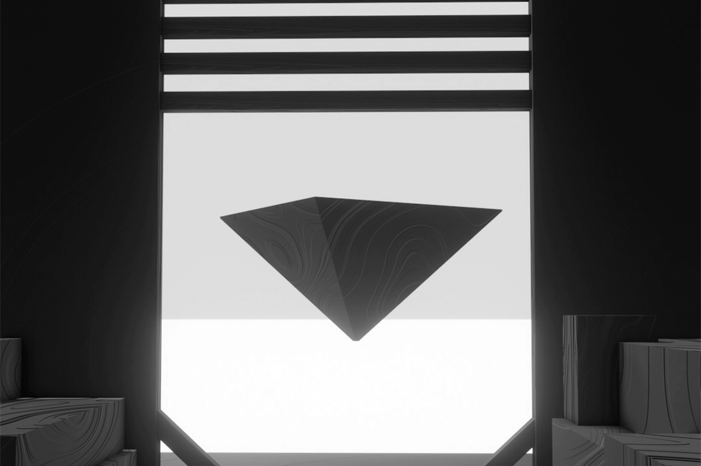
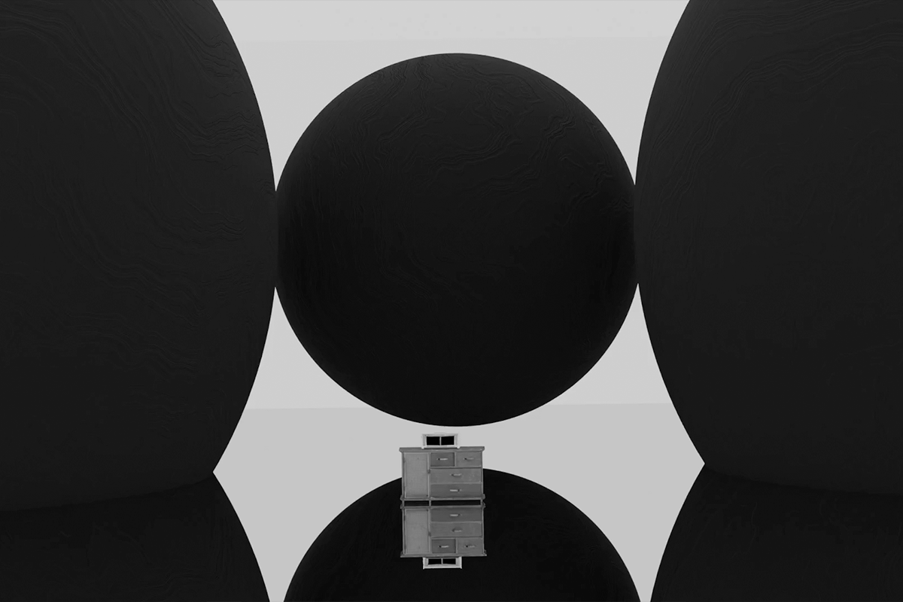

NO. 02
Archives
Traité de Lecture des archives Neuronnales
By Redactor
5 Min Read
Blonde received widespread acclaim, with critics praising Ocean's introspective lyrics and the album's unconventional
See MoreB.A n°1

La complexité de la Vulnerabilité de l'homme
By Tom Joubert
30 Min Read
Qui, comment ou pourquoi n'a pas pas d'importance ici, seuls les esprits érudits sont capables de résoudre l'énigme
See MoreB.A n°2

L'éloge de la Solitude du naufrage
By Tom Joubert
30 Min Read
La matérialité est le vecteur des souvenirs, ce sont les reliques d'anciennes temporalités mais aussi d'anciennes âmes
See More
Articles Transitoires
1
Dispositif d'extraction mémorielle
Découvrez les plans de notre machine expérimentale ainsi que nos procédés d'extraction
2
Chargé de terrain persuasif
Accompagnez dans son quotidien les dangers des chargés de terrains
3
Traducteur Para-colorimétrique
Fonctionnement du dispositif permettant à identifier la plage de transit
4
Leurre à Surpression
Élément persuasif de surpression exploitant la plage de transit comme leurre
5
Dispositif musical Trans-Mémoriel
Émulsion des souvenirs d'un sujet par induction mémorielle et ésothérique
6
Devenez membre
Veuillez vous référer à votre BCS pour plus d'informations